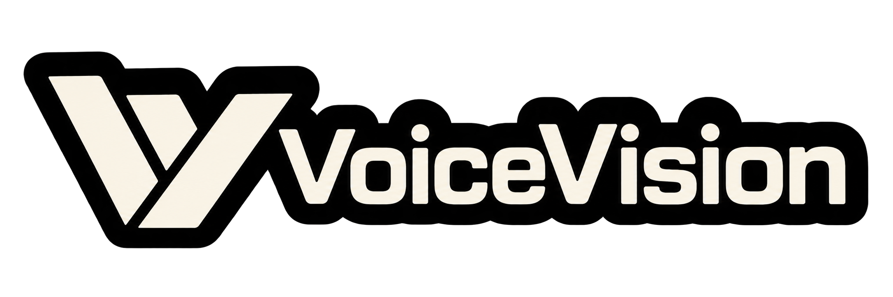

01 / STUDIO
IMAGE + DRAWING
PRACOVNÍ PROSTORÚloha začíná
obrazem.
Popište zadání v chatu, pracujte se snímkem a kresbou nebo otevřete ruční ovládání.
↗
PLATFORMProzkoumat VVP ↗Připravujte, nastavujte a ověřujte úlohy strojového vidění v jednom pracovním prostředí. Od snímku a kresby až po komunikaci se zařízením.
VoiceVision Platform spojuje Studio, runtime, společné příkazové rozhraní a adaptéry zařízení. Technik může úlohu popsat v chatu, pracovat se snímkem a kresbou nebo použít pokročilé ruční ovládání.
Co VVP obsahuje ↗Od přípravy úlohy až po ovládání a ověřování připojených zařízení.
Popište zadání v chatu, pracujte se snímkem a kresbou nebo otevřete ruční ovládání.
↗Studio, příkazová aplikace a ruční ovládání sdílejí runtime příkazy i revize.
↗Operace se vyberou výslovně, změny ověří a stav se zobrazí s jasnými omezeními.
↗Čtení stavu, změna nastavení a spuštění inspekce jsou oddělené kroky. Runtime vrací výsledek operace a potvrzený stav; aplikace nepředstírá, že příkaz znamená úspěšnou inspekci.
Prozkoumat zdrojový projekt ↗Podívejte se na zdrojový kód, dokumentaci a aktuální vývoj platformy.